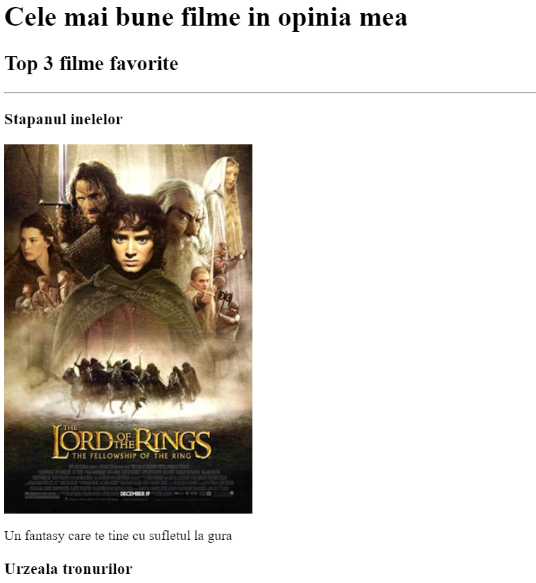
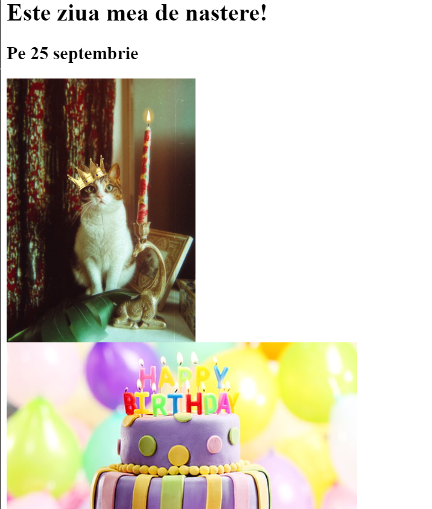

Portofoliul lui Alexandru Popa
Vreau sa devin Web Developer
Aici veti vedea toate miniproiectele mele fara CSS
Dati click pe link sau pe imaginea de mai jos pentru pagina

Dati click pe link sau pe imaginea de mai jos pentru pagina

Despre mine
Contacte